الظنبوب والشظية والرضفةTibia, Fibula and Patella
عملي · م03 · 9.9 دقيقةأقسام المحاضرة (11)
- الظنبوب والشظية والرضفة: نظرة عامةTibia, Fibula and Patella
- الظنبوب القريب: المعالم العظميةProximal Tibia
- جسم الظنبوبTibial Shaft
- الظنبوب البعيد والمراجعةDistal Tibia & Review
- كسور الظنبوبFractures of the Tibia
- متلازمة الحيّز في الساقCompartment Syndrome (Leg)
- الشظية وكسورهاFibula & its Fractures
- تشريح الركبة في الأشعةKnee X-Ray Anatomy
- أشعة الكاحل الطبيعيةAnkle X-Ray Anatomy
- أشعة الأطفال وحالة كسرPaediatric Tib/Fib & a Case
- الرضفة وخلعها وكسرهاPatella
الظنبوب والشظية والرضفة: نظرة عامةTibia, Fibula and Patella
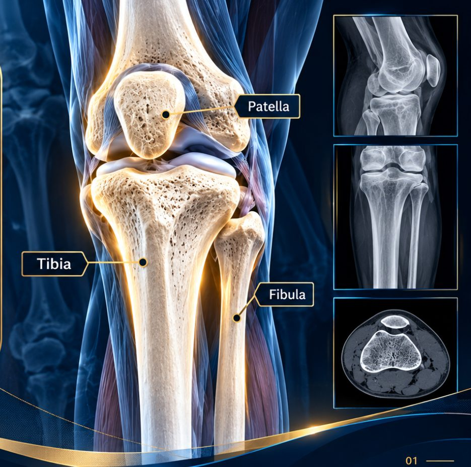
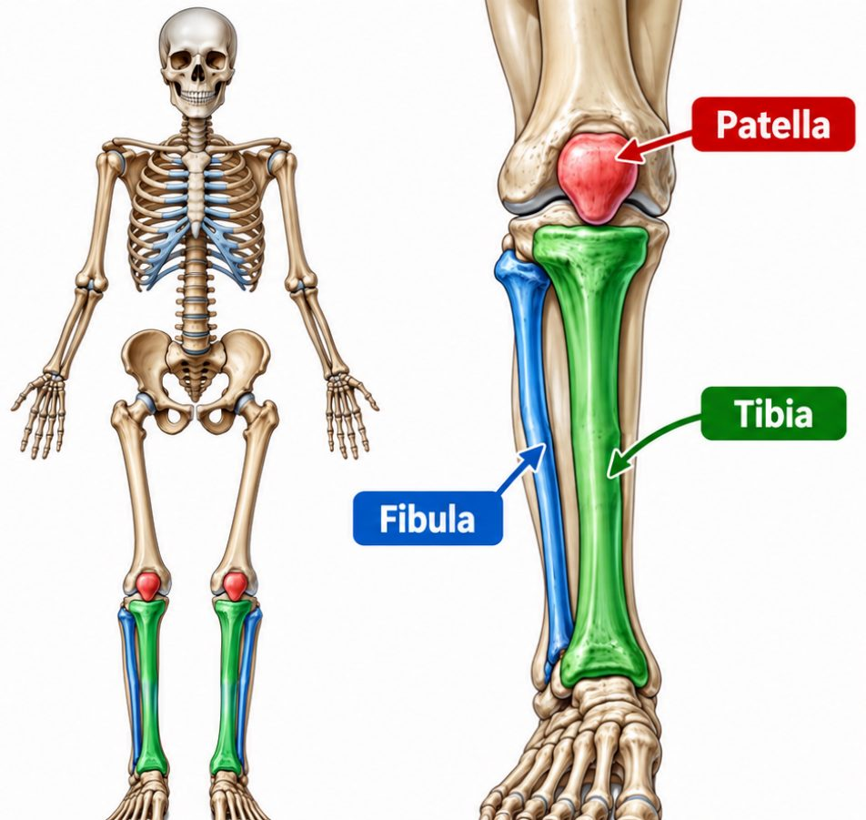
الرضفةPatella
- • A sesamoid bone in front of the knee joint.عظم سمسماني أمام مفصل الركبة.
الظنبوبTibia
- • Main bone of the lower leg (shin).العظم الرئيس في الساق (عظم القصبة).
- • Articulates at the knee and ankle joints.يتمفصل عند مفصلَي الركبة والكاحل.
- • Second largest bone in the body.ثاني أكبر عظم في الجسم.
- • Key weight-bearing bone.العظم الأساسي في حمل الوزن.
الشظيةFibula
- • Long, slender bone on the lateral side of the lower leg.عظم طويل نحيف على الجانب الوحشي من الساق.
- • Does not bear significant weight.لا يحمل وزناً يُذكر.
الظنبوب القريب: المعالم العظميةProximal Tibia
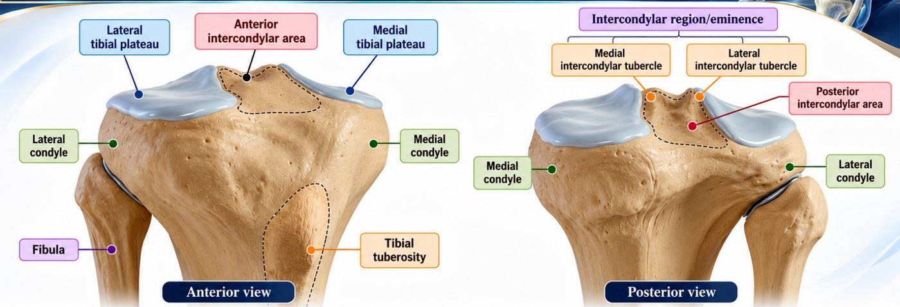
1- اللقمتان الإنسية والوحشيةMedial & Lateral Condyles
- • Widen the proximal tibia.تُعرِّضان الجزء القريب من الظنبوب.
- • Support weight-bearing.تدعمان حمل الوزن.
2- الهضبة الظنبوبيةTibial Plateau
- • Flat superior surface formed by both condyles.سطح علوي مسطّح تكوّنه اللقمتان معاً.
- • Articulates with the femoral condyles.يتمفصل مع لقمتَي عظم الفخذ.
3- البارزة بين اللقمتينIntercondylar Eminence
Raised area between the condyles, consisting of:
منطقة مرتفعة بين اللقمتين، وتتكوّن من:
- • Medial intercondylar tubercle.الحديبة الإنسية بين اللقمتين.
- • Lateral intercondylar tubercle.الحديبة الوحشية بين اللقمتين.
4- الارتكازات والتمفصلAttachments & Articulation
- • Attachments: Intercondylar region provides attachment for knee ligaments (ACL & PCL) and menisci.الارتكازات: توفّر المنطقة بين اللقمتين مكاناً لارتكاز أربطة الركبة (الرباطان الصليبيان الأمامي ACL والخلفي PCL) والغضروفين الهلاليين.
- • Articulation: Intercondylar tubercles project into the intercondylar fossa of the femur.التمفصل: تبرز الحديبتان بين اللقمتين داخل الحفرة بين اللقمتين في عظم الفخذ.
جسم الظنبوبTibial Shaft
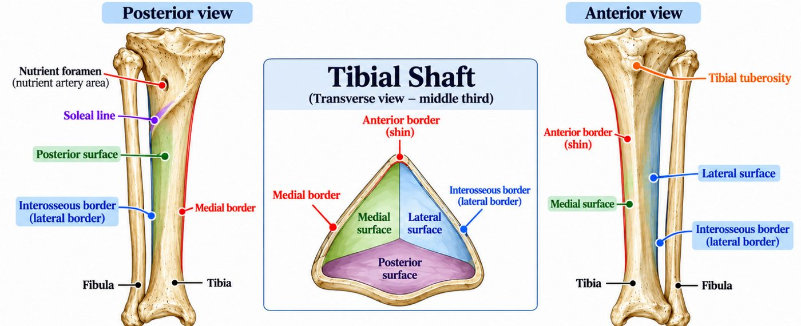
الصفات الأساسية لجسم الظنبوبTibial Shaft – Key Features
- • Shape: Triangular prism → 3 borders + 3 surfaces.الشكل: موشور ثلاثي ← 3 حواف + 3 سطوح.
- • Anterior border: subcutaneous (shin), easily palpable.الحافة الأمامية: تحت الجلد مباشرة (القصبة)، ويسهل جسّها.
- • Tibial tuberosity: proximal anterior tibia; patellar ligament.حدبة الظنبوب: في مقدّمة الجزء القريب من الظنبوب؛ يرتكز عليها الرباط الرضفي.
- • Posterior surface: soleal line (origin of soleus).السطح الخلفي: عليه الخط النعلي (منشأ العضلة النعلية).
- • Soleal line: runs inferomedially; important landmark.الخط النعلي: يمتدّ إلى الأسفل والإنسي؛ وهو معلم مهم.
- • Nutrient artery: usually proximal to soleal line.الشريان المغذي: يقع عادةً أعلى الخط النعلي (من جهته القريبة).
- • Interosseous border (lateral border): attachment of interosseous membrane connecting tibia and fibula.الحافة بين العظمين (الحافة الوحشية): مرتكز الغشاء بين العظمين الذي يربط الظنبوب بالشظية.
يجب معرفته للامتحان العمليMust Know for Practical Exam
- • Shin → Anterior border.القصبة ← الحافة الأمامية.
- • Patellar ligament → Tibial tuberosity.الرباط الرضفي ← حدبة الظنبوب.
- • Soleus muscle → Soleal line.العضلة النعلية ← الخط النعلي.
- • Interosseous membrane → Lateral border (interosseous border).الغشاء بين العظمين ← الحافة الوحشية (الحافة بين العظمين).
الظنبوب البعيد والمراجعةDistal Tibia & Review
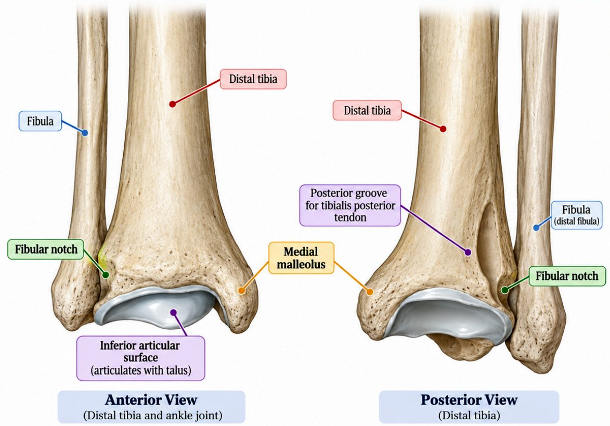
الخلاصةSummary
- • Distal end: Widens for weight-bearing.النهاية البعيدة: تتّسع لحمل الوزن.
- • Medial malleolus: Medial bony projection; forms part of the ankle joint.الكعب الإنسي: بروز عظمي إنسي؛ يكوّن جزءاً من مفصل الكاحل.
- • Posterior groove: Passage of tibialis posterior tendon.الميزاب الخلفي: ممرّ وتر العضلة الظنبوبية الخلفية.
- • Fibular notch: Lateral side; forms the distal tibiofibular joint.الثلمة الشظوية: في الجانب الوحشي؛ تكوّن المفصل الظنبوبي الشظوي البعيد.
نقاط أساسيةKey Points
- • Medial malleolus → medial ankle prominence.الكعب الإنسي ← البروز الإنسي للكاحل.
- • Ankle joint → articulates with talus.مفصل الكاحل ← يتمفصل مع عظم الكاحل.
- • Fibular notch → articulates with fibula.الثلمة الشظوية ← تتمفصل مع الشظية.
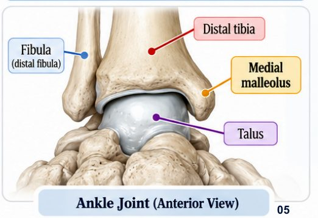
مراجعة الظنبوب والشظيةTibia & Fibula Review
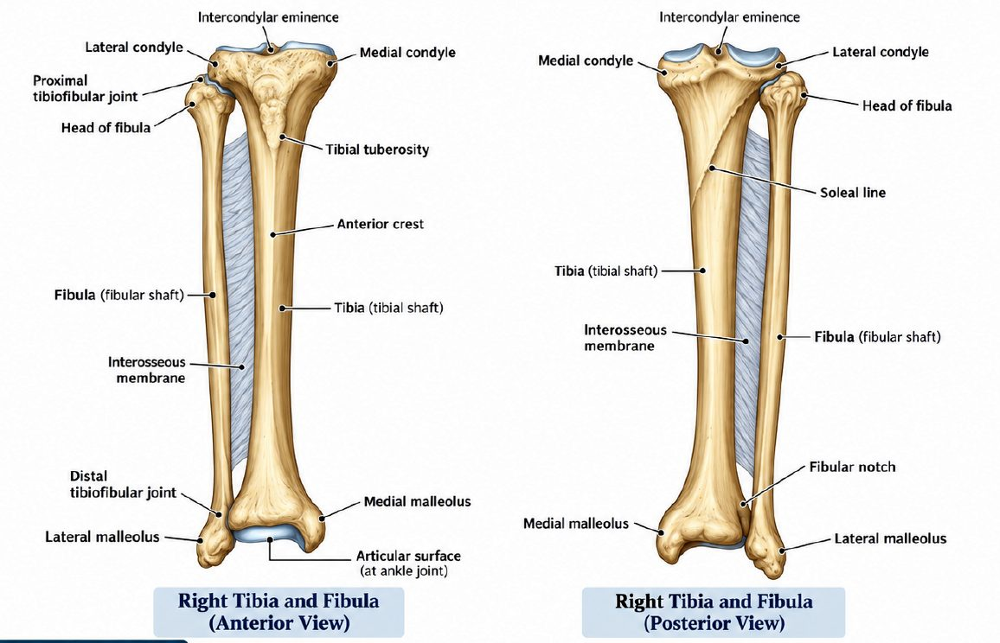
نقاط المراجعة الأساسيةKey Review Points
- • Tibia = main weight-bearing bone.الظنبوب = العظم الرئيس الحامل للوزن.
- • Fibula = slender lateral bone.الشظية = عظم نحيف وحشي.
- • Tibial tuberosity = attachment of patellar ligament.حدبة الظنبوب = مرتكز الرباط الرضفي.
- • Soleal line = posterior tibial landmark.الخط النعلي = معلم خلفي في الظنبوب.
- • Interosseous membrane connects tibia and fibula.الغشاء بين العظمين يربط الظنبوب بالشظية.
- • Distally, tibia forms the medial malleolus and articulates with the talus.في الأسفل، يكوّن الظنبوب الكعب الإنسي ويتمفصل مع عظم الكاحل.
كسور الظنبوبFractures of the Tibia
الجزء القريب من الظنبوب: كسر الهضبة الظنبوبيةProximal Tibia – Tibial Plateau Fracture
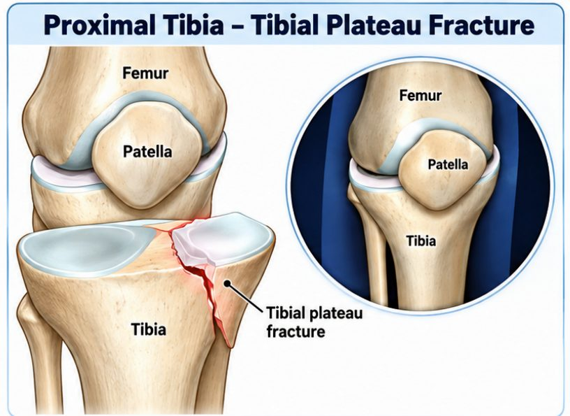
كسور جسم الظنبوبTibial Shaft Fractures
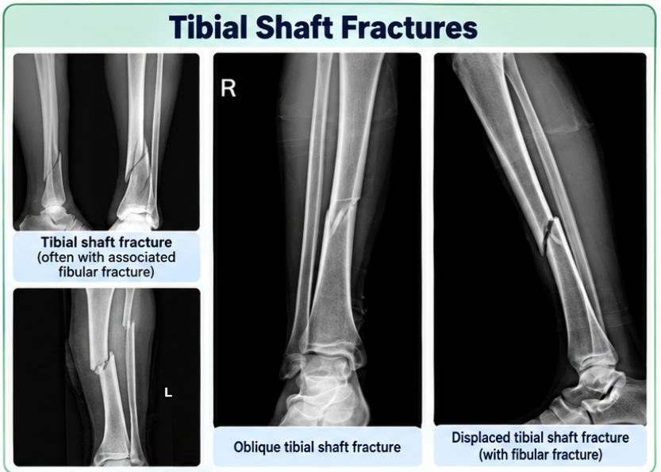
الأنواعTypes
- • High-energy trauma: common in young patients.الإصابة عالية الطاقة: شائعة عند المرضى الشباب.
- • Low-energy trauma: common in elderly patients.الإصابة منخفضة الطاقة: شائعة عند المرضى المسنّين.
المواقع الشائعةCommon Sites
- • Tibial shaft: most common; often associated with fibular fracture.جسم الظنبوب: الأشيع؛ وغالباً يصاحبه كسر في الشظية.
- • Proximal tibia: tibial plateau fracture involving the condyles.الجزء القريب من الظنبوب: كسر الهضبة الظنبوبية الذي يشمل اللقمتين.
كسور الهضبة الظنبوبيةTibial Plateau Fractures
- • May injure the menisci and knee ligaments.قد تُصيب الغضروفين الهلاليين وأربطة الركبة.
- • Classified by Schatzker classification.تُصنَّف بتصنيف شاتزكر.
- • Significantly displaced fractures often require surgery.الكسور المنزاحة كثيراً تحتاج غالباً إلى الجراحة.
نقاط مهمةImportant Points
- • Most common site → Tibial shaft.الموقع الأشيع ← جسم الظنبوب.
- • Proximal tibial fracture → Tibial plateau fracture.كسر الظنبوب القريب ← كسر الهضبة الظنبوبية.
- • Classification → Schatzker.التصنيف ← Schatzker (شاتزكر).
كسر الكعب الإنسيMedial Malleolus Fracture
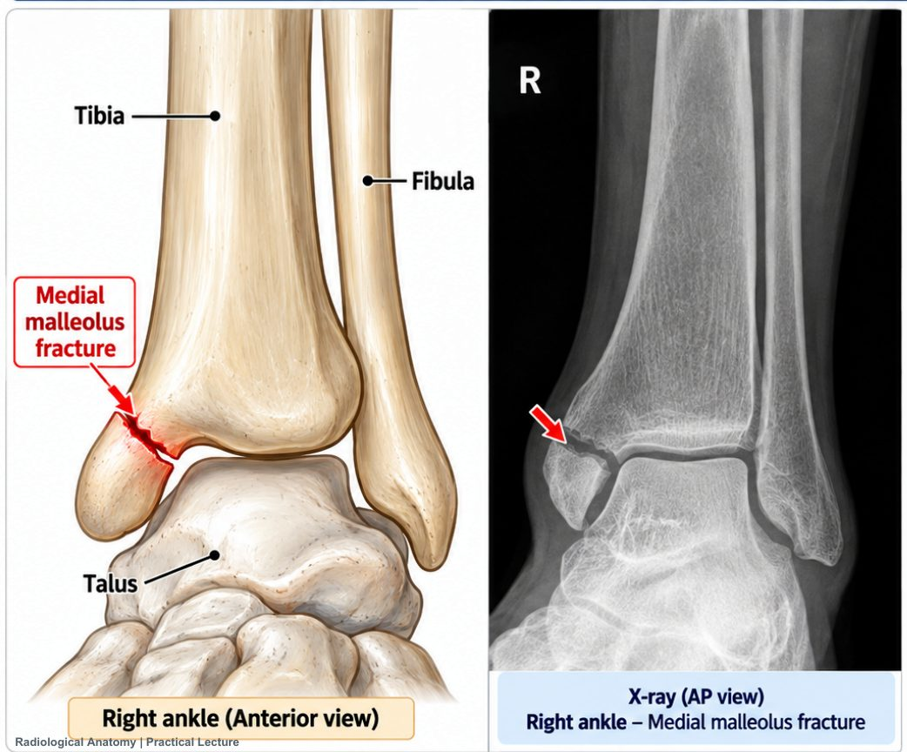
1- نمط الكسرFracture Pattern
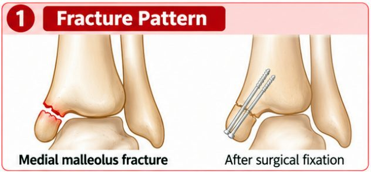
2- آلية الإصابةMechanism
- • Ankle twisting (inversion injury).التواء الكاحل (إصابة انقلاب القدم للداخل).
3- الإصابة المصاحبةAssociated Injury
- • Often accompanied by lateral malleolus fracture.غالباً يصاحبه كسر الكعب الوحشي.
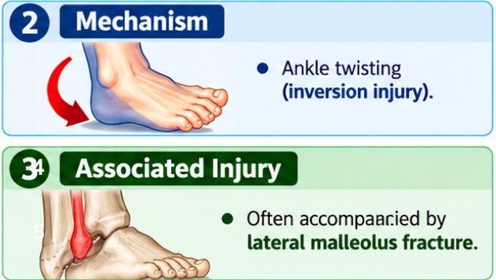
4- العلاجManagement
- • Stable, undisplaced fractures → conservative treatment (immobilization).الكسور المستقرة غير المنزاحة ← علاج تحفّظي (تثبيت بالجبيرة).
- • Unstable or displaced fractures → may require surgery (e.g. screw fixation).الكسور غير المستقرة أو المنزاحة ← قد تحتاج إلى الجراحة (مثل التثبيت بالبراغي).
متلازمة الحيّز في الساقCompartment Syndrome (Leg)
التشريح المقطعي للساقCross-sectional Anatomy (Leg)
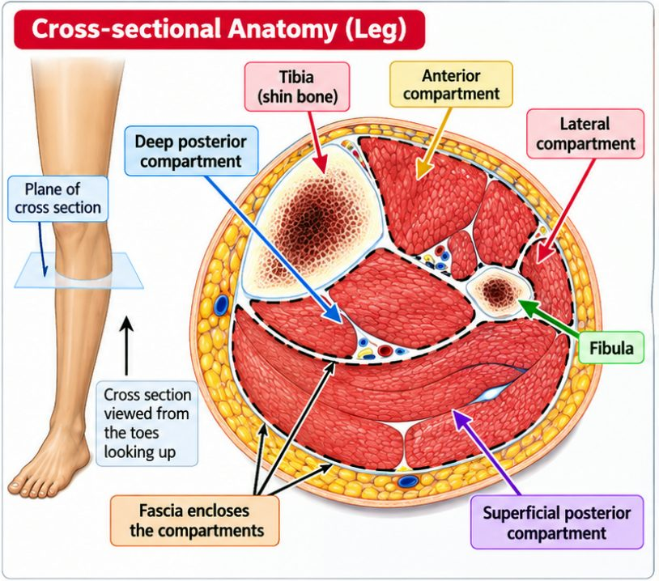
المظاهر السريريةClinical Features
1- العلامات المبكرةEarly signs
- • Severe pain out of proportion to the injury.ألم شديد لا يتناسب مع حجم الإصابة.
- • Pain on passive stretching of the muscles.ألم عند التمديد المنفعل (السلبي) للعضلات.
- • Tense swelling.تورّم مشدود.
- • Paresthesia (tingling, numbness).المَذَل (وخز وخدر).
2- العلامات المتأخرةLate signs
- • Paralysis.الشلل.
- • Pulselessness (late sign).غياب النبض (علامة متأخرة).
3- ملاحظة مهمةImportant Note
Do not wait for loss of pulse — it is a late sign.
لا تنتظر غياب النبض، فهو علامة متأخرة.
4- العلاجManagement
- • Immediate surgical assessment.تقييم جراحي فوري.
- • Urgent fasciotomy when indicated.بضع اللفافة العاجل عند الحاجة.
5- المراقبةMonitor
- • Monitor neurovascular status before and after surgery.راقب الحالة العصبية الوعائية قبل الجراحة وبعدها.
بضع اللفافة (تحرير الحيّز)Fasciotomy (Compartment Release)
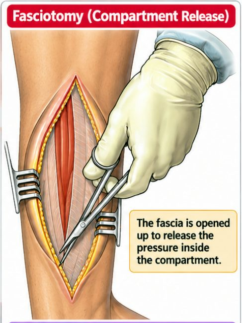
The fascia is opened up to release the pressure inside the compartment.
تُفتَح اللفافة لتخفيف الضغط داخل الحيّز.
دواعي الإجراءIndications
- • Clinical diagnosis of compartment syndrome with progressive symptoms.التشخيص السريري لمتلازمة الحيّز مع أعراض متزايدة.
- • Often associated with tibial fractures, crush injury or reperfusion injury.غالباً ترتبط بكسور الظنبوب، أو الإصابة الهرسية، أو إصابة إعادة التروية.
نقاط للحفظKey Points to Memorize
- • A surgical emergency!حالة جراحية طارئة!
- • Severe pain + pain on passive stretching.ألم شديد + ألم عند التمديد المنفعل.
- • Most common in closed fractures of the tibia.أشيع ما تكون في الكسور المغلقة للظنبوب.
- • Do not wait for loss of pulse (it is a late sign).لا تنتظر غياب النبض (فهو علامة متأخرة).
- • Treatment: Urgent fasciotomy when indicated.العلاج: بضع اللفافة العاجل عند الحاجة.
الشظية وكسورهاFibula & its Fractures
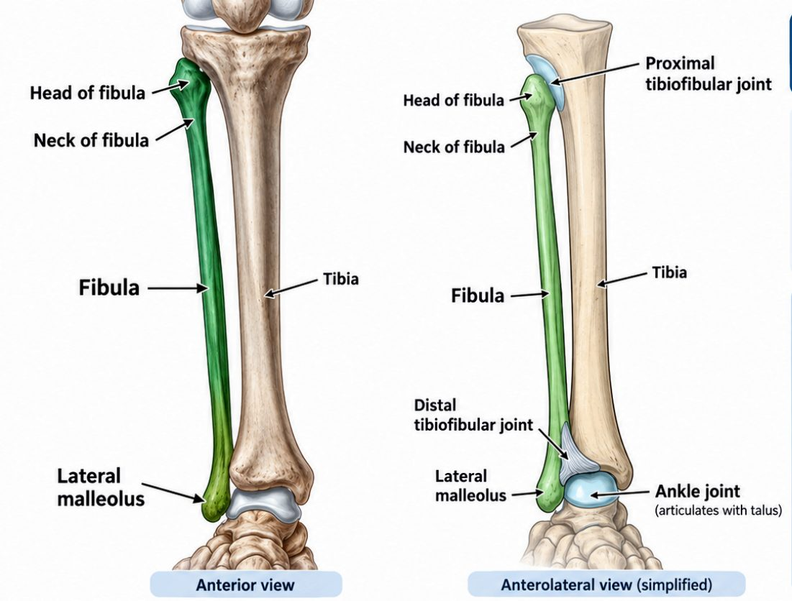
The fibula is a bone located on the lateral aspect of the leg. Its main function is to provide attachment for muscles and it is not a major weight-bearing bone.
الشظية عظم يقع على الجانب الوحشي من الساق. ووظيفتها الرئيسة توفير مكان لارتكاز العضلات، وليست عظماً رئيساً في حمل الوزن.
المفاصل الرئيسةMain Articulations
- • Proximal tibiofibular joint – articulates with the lateral condyle of the tibia.المفصل الظنبوبي الشظوي القريب: تتمفصل فيه الشظية مع اللقمة الوحشية للظنبوب.
- • Distal tibiofibular joint – articulates with the fibular notch of the tibia.المفصل الظنبوبي الشظوي البعيد: تتمفصل فيه الشظية مع الثلمة الشظوية للظنبوب.
- • Ankle joint – articulates with the talus bone of the foot.مفصل الكاحل: تتمفصل فيه الشظية مع عظم الكاحل في القدم.
نقاط أساسيةKey Points
- • Lateral bone of the legالعظم الوحشي في الساق
- • Main role: muscle attachmentالدور الرئيس: ارتكاز العضلات
- • Not a weight-bearerلا يحمل الوزن
- • Forms the lateral malleolusيكوّن الكعب الوحشي
الشظية: التشريح الأساسيFibula – Key Anatomy
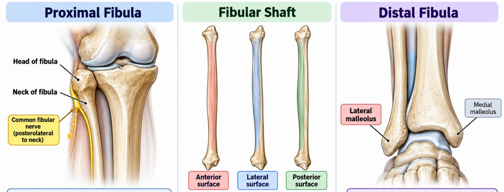
الجزء القريب من الشظيةProximal Fibula
- • Head: articulates with lateral condyle of tibia.الرأس: يتمفصل مع اللقمة الوحشية للظنبوب.
- • Neck: common fibular nerve passes posterolaterally (clinically important).العنق: يمرّ العصب الشظوي المشترك خلفه ووحشيّه (مهم سريرياً).
جسم الشظيةFibular Shaft
- • 3 surfaces: anterior, lateral, posterior.3 سطوح: أمامي، ووحشي، وخلفي.
- • Each surface faces its corresponding leg compartment.كل سطح يواجه الحيّز المقابل له في الساق.
الجزء البعيد من الشظيةDistal Fibula
- • Lateral malleolus: forms lateral ankle prominence.الكعب الوحشي: يكوّن البروز الوحشي للكاحل.
- • Extends lower than the medial malleolus.ينزل إلى مستوى أدنى من الكعب الإنسي.
كسور الشظيةFractures of the Fibula
كسر الكعب الوحشيLateral Malleolus Fracture
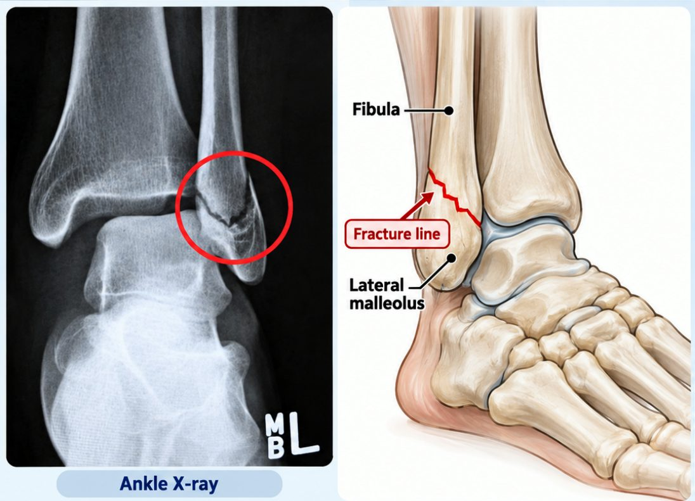
آليتان رئيستانTwo main mechanisms:
- • Forced external rotation → spiral fracture.الدوران الخارجي القسري ← كسر حلزوني.
- • Forced eversion → less common; may cause a transverse fracture.انقلاب القدم للخارج القسري ← أقل شيوعاً؛ وقد يسبّب كسراً مستعرضاً.
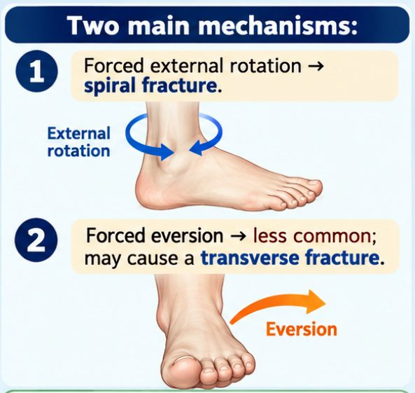
الخلاصةSummary:
- • Most common ankle site → Lateral malleolus.أشيع موقع للكسر في الكاحل ← الكعب الوحشي.
- • External rotation → Spiral fracture.الدوران الخارجي ← كسر حلزوني.
- • Eversion → Transverse fracture.انقلاب القدم للخارج ← كسر مستعرض.
تشريح الركبة في الأشعةKnee X-Ray Anatomy
تشريح الركبة في الأشعة (طبيعي)KNEE X-RAY ANATOMY (Normal)
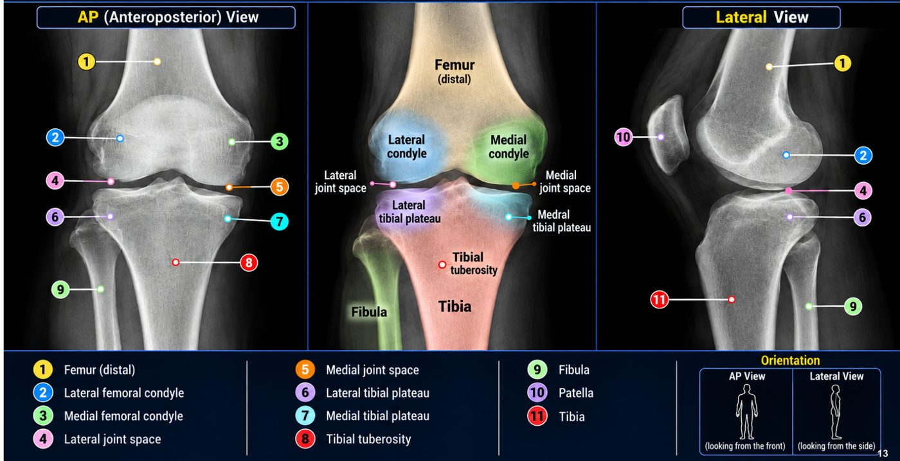
- • Femur (distal)عظم الفخذ (الجزء البعيد)
- • Lateral femoral condyleاللقمة الفخذية الوحشية
- • Medial femoral condyleاللقمة الفخذية الإنسية
- • Lateral joint spaceالمسافة المفصلية الوحشية
- • Medial joint spaceالمسافة المفصلية الإنسية
- • Lateral tibial plateauالهضبة الظنبوبية الوحشية
- • Medial tibial plateauالهضبة الظنبوبية الإنسية
- • Tibial tuberosityحدبة الظنبوب
- • Fibulaالشظية
- • Patellaالرضفة
- • Tibiaالظنبوب
تشريح أشعة الركبةKnee X-Ray Anatomy
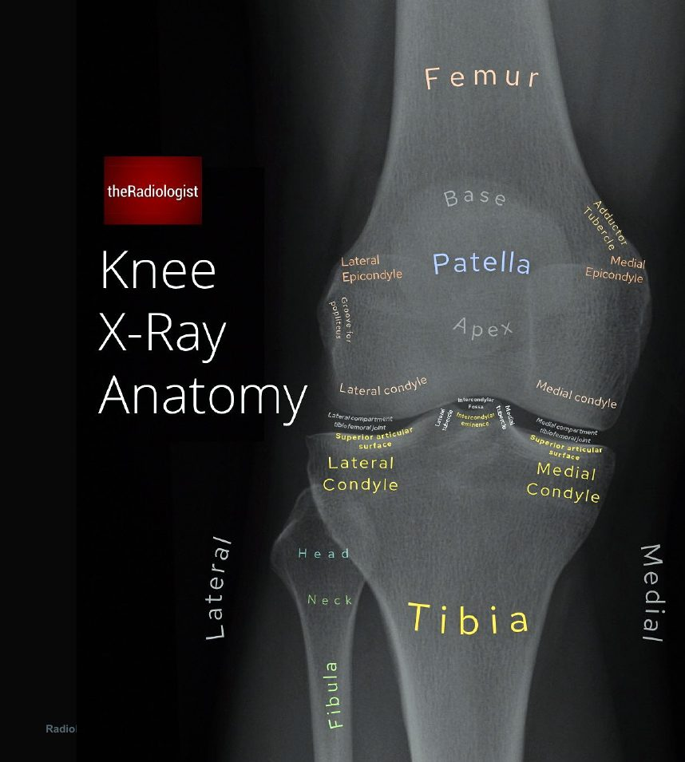
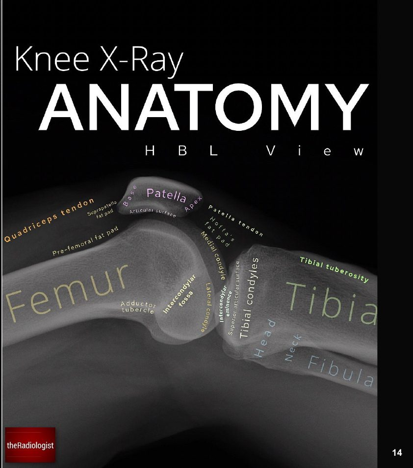
أشعة الكاحل الطبيعيةAnkle X-Ray Anatomy
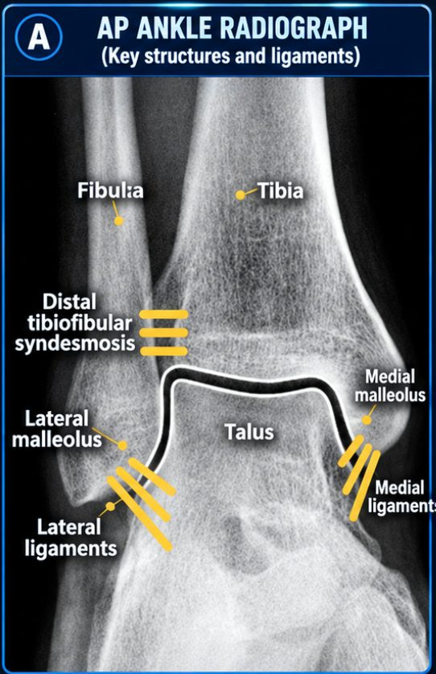
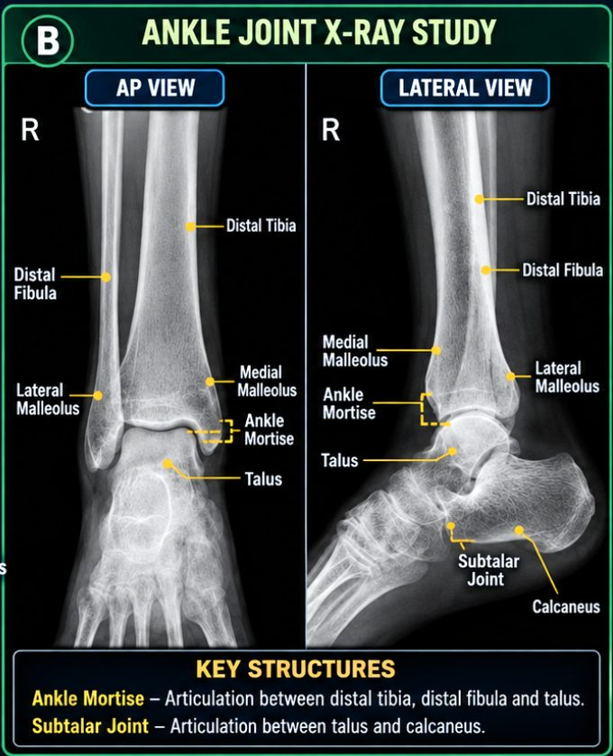
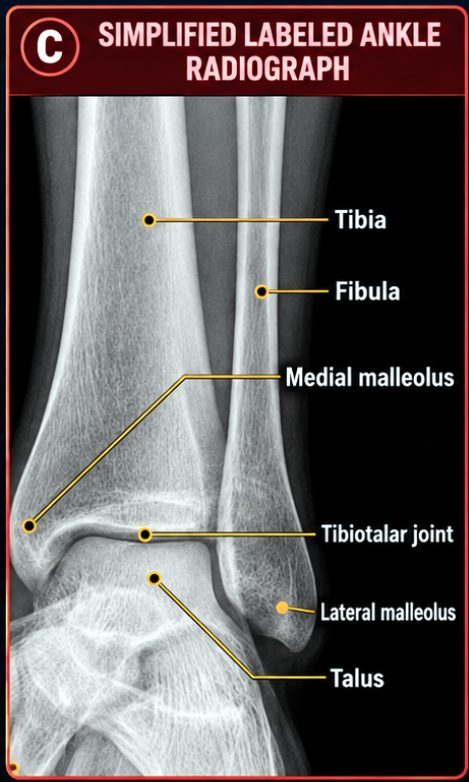
التراكيب الأساسيةKEY STRUCTURES
- • Ankle Mortise – Articulation between distal tibia, distal fibula and talus.نقرة الكاحل Ankle Mortise: التمفصل بين الظنبوب البعيد والشظية البعيدة وعظم الكاحل.
- • Subtalar Joint – Articulation between talus and calcaneus.المفصل تحت الكاحلي: التمفصل بين عظم الكاحل وعظم العقب.
أشعة الأطفال وحالة كسرPaediatric Tib/Fib & a Case
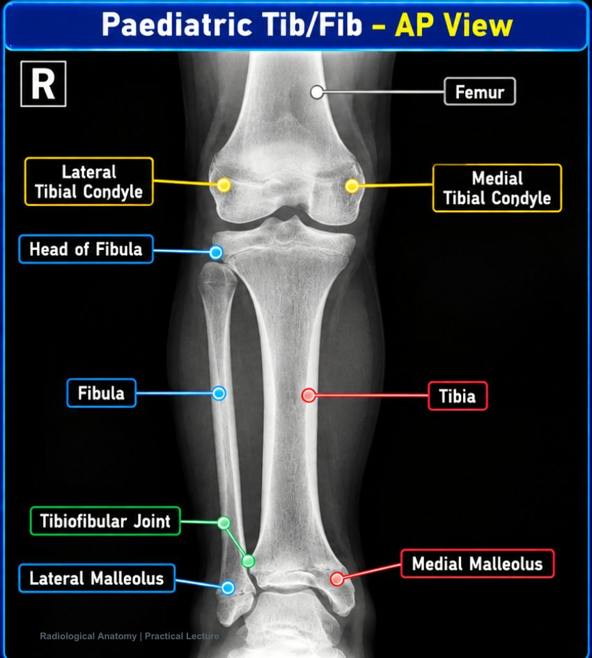
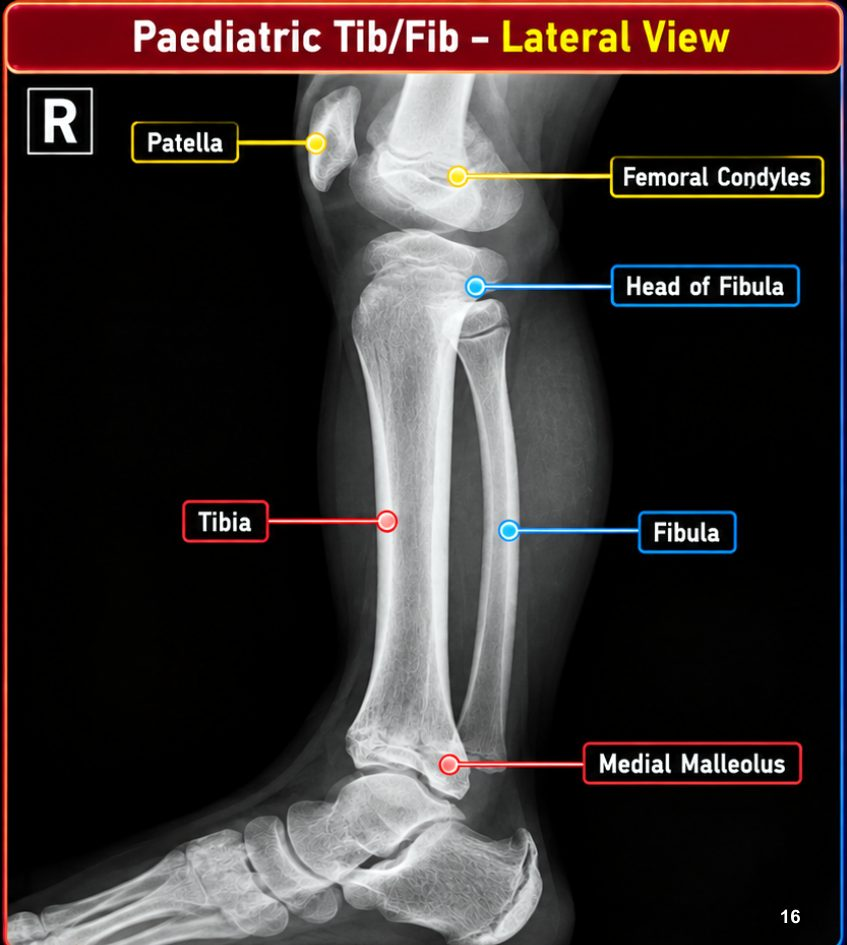
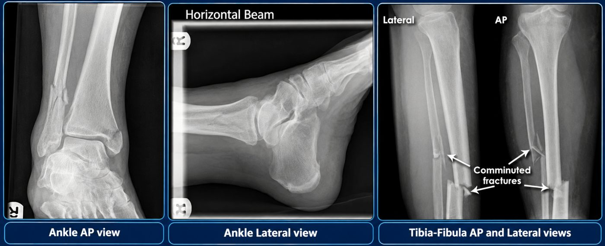
الوصفDescription
- • X-rays show a comminuted fracture of the distal fibula shaft with multiple fracture fragments.تُظهر الصور الشعاعية كسراً مفتّتاً في الجزء البعيد من جسم الشظية مع قطع كسرية متعددة.
- • There is also an oblique fracture of the base of the medial malleolus.ويوجد أيضاً كسر مائل في قاعدة الكعب الإنسي.
الرضفة وخلعها وكسرهاPatella
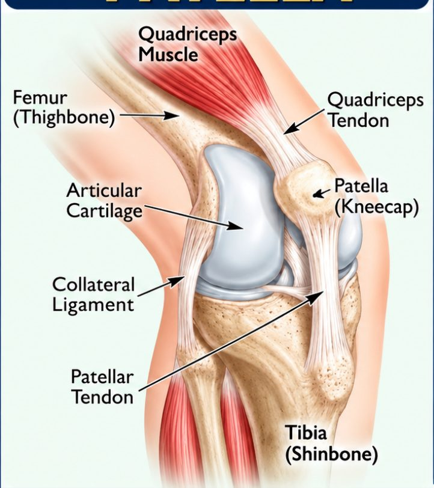
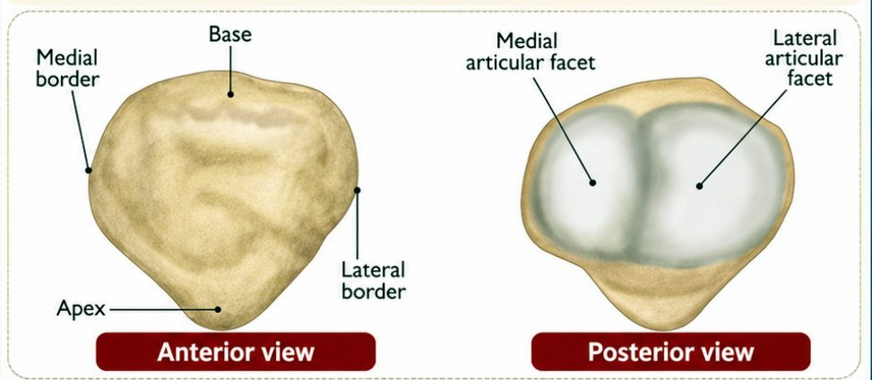
معلومات عامةGeneral Information
- • Location: Anterior to the knee joint.الموقع: أمام مفصل الركبة.
- • Type: Largest sesamoid bone in the body.النوع: أكبر عظم سمسماني في الجسم.
الارتكازاتAttachments
- • Superior → Quadriceps tendon.من الأعلى ← وتر العضلة رباعية الرؤوس.
- • Inferior → Patellar ligament.من الأسفل ← الرباط الرضفي.
الوظائفFunctions
- • Enhances knee extension.تعزّز بسط الركبة.
- • Protects the knee joint.تحمي مفصل الركبة.
المعالم العظميةBony Landmarks
- • Shape: Triangular.الشكل: مثلّث.
- • Apex (inferior): Attached to tibial tuberosity via patellar ligament.القمة (سفلية): ترتبط بحدبة الظنبوب عن طريق الرباط الرضفي.
- • Base (superior): Attachment of quadriceps tendon.القاعدة (علوية): مرتكز وتر العضلة رباعية الرؤوس.
- • Posterior surface: Articulates with femur.السطح الخلفي: يتمفصل مع عظم الفخذ.
- • Medial facet: Articulates with medial femoral condyle.الوجيه الإنسي: يتمفصل مع اللقمة الفخذية الإنسية.
- • Lateral facet: Articulates with lateral femoral condyle.الوجيه الوحشي: يتمفصل مع اللقمة الفخذية الوحشية.
الرضفة والركبة في الأشعة
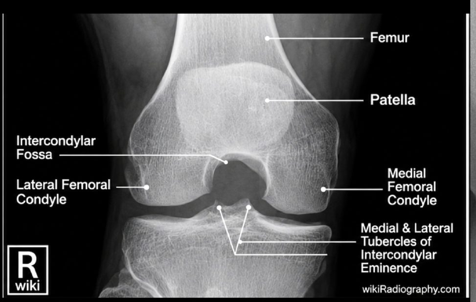
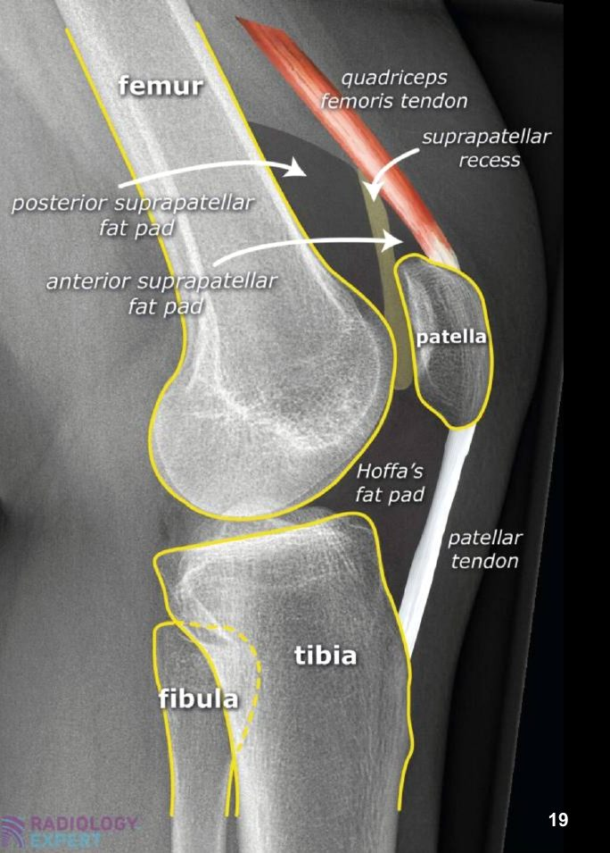
أشعة كسر الرضفةX-Rays of Fractured Patella (Kneecap)
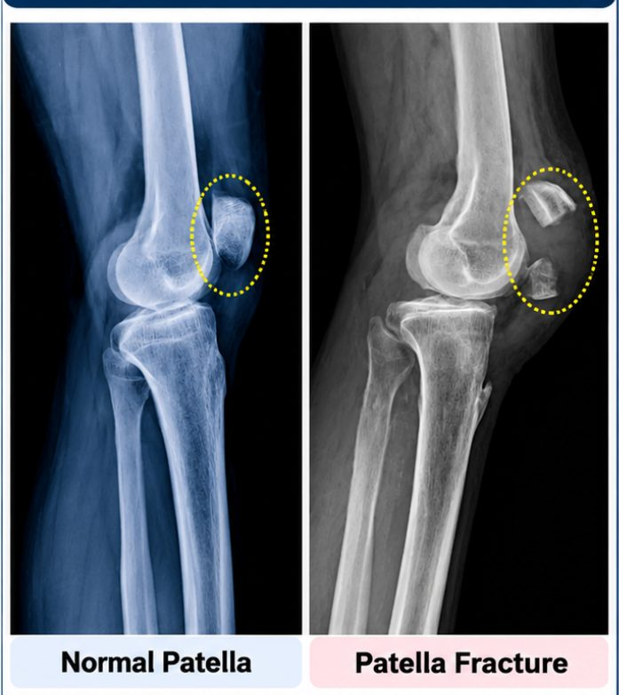
خلع الرضفةPatellar Dislocation
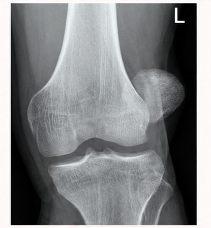
التعريفDefinition
- • Displacement of patella out of the patellofemoral groove.انزياح الرضفة خارج الأخدود الرضفي الفخذي.
الاتجاه الأشيعMost common direction
- • Lateral.وحشي.
الأسبابCauses
- • Direct trauma or sudden twisting of the knee.رضّ مباشر أو التواء مفاجئ في الركبة.
شائع عندCommon in
- • Athletes.الرياضيين.
كسر الرضفةPatellar Fracture
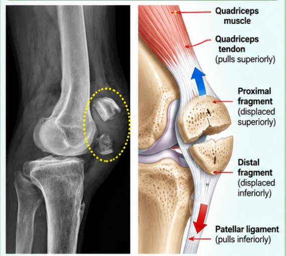
الأسبابCauses
- • Direct trauma to the bone.رضّ مباشر على العظم.
- • Sudden contraction of the quadriceps muscle.تقلّص مفاجئ للعضلة رباعية الرؤوس.
شائع عندCommon in
- • Males aged 20–50 years.الذكور بعمر 20–50 سنة.
انزياح القطعFragment displacement
- • Proximal fragment: Pulled superiorly by the quadriceps tendon.القطعة القريبة: تُسحَب إلى الأعلى بوتر العضلة رباعية الرؤوس.
- • Distal fragment: Pulled inferiorly by the patellar ligament.القطعة البعيدة: تُسحَب إلى الأسفل بالرباط الرضفي.
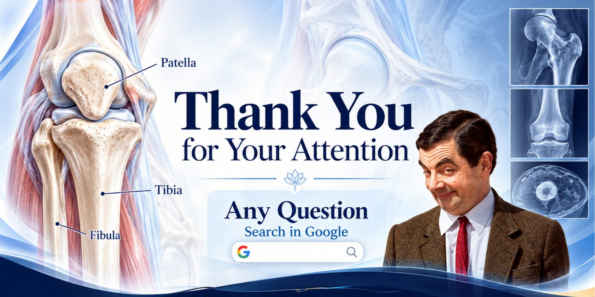
المحاضرة مسموعة
نص الأستاذ بالإنكليزي مثل الأصل · 9.9 دقيقة. اضغط أي جملة تسمعها، أو مصطلح منقّط تسمع لفظه ومعناه.
Tibia, Fibula and Patellaالظنبوب والشظية والرضفة: نظرة عامة
Tibia, Fibula and Patella
Patella
A sesamoid bone in front of the knee joint.
Tibia
Main bone of the lower leg (shin).
Articulates at the knee and ankle joints.
Second largest bone in the body.
Key weight-bearing bone.
Fibula
Long, slender bone on the lateral side of the lower leg.
Does not bear significant weight.
Proximal Tibiaالظنبوب القريب: المعالم العظمية
Proximal Tibia
Medial & Lateral Condyles
Widen the proximal tibia.
Support weight-bearing.
Tibial Plateau
Flat superior surface formed by both condyles.
Articulates with the femoral condyles.
Intercondylar Eminence
Raised area between the condyles, consisting of:
Medial intercondylar tubercle.
Lateral intercondylar tubercle.
Attachments & Articulation
Attachments: Intercondylar region provides attachment for knee ligaments (ACL & PCL) and menisci.
Articulation: Intercondylar tubercles project into the intercondylar fossa of the femur.
Tibial Shaftجسم الظنبوب
Tibial Shaft
Tibial Shaft – Key Features
Shape: Triangular prism → 3 borders + 3 surfaces.
Anterior border: subcutaneous (shin), easily palpable.
Tibial tuberosity: proximal anterior tibia; patellar ligament.
Posterior surface: soleal line (origin of soleus).
Soleal line: runs inferomedially; important landmark.
Nutrient artery: usually proximal to soleal line.
Interosseous border (lateral border): attachment of interosseous membrane connecting tibia and fibula.
Must Know for Practical Exam
Shin → Anterior border.
Patellar ligament → Tibial tuberosity.
Soleus muscle → Soleal line.
Interosseous membrane → Lateral border (interosseous border).
Distal Tibia & Reviewالظنبوب البعيد والمراجعة
Distal Tibia & Review
Summary
Distal end: Widens for weight-bearing.
Medial malleolus: Medial bony projection; forms part of the ankle joint.
Posterior groove: Passage of tibialis posterior tendon.
Fibular notch: Lateral side; forms the distal tibiofibular joint.
Key Points
Medial malleolus → medial ankle prominence.
Ankle joint → articulates with talus.
Fibular notch → articulates with fibula.
Tibia & Fibula Review
Key Review Points
Tibia = main weight-bearing bone.
Fibula = slender lateral bone.
Tibial tuberosity = attachment of patellar ligament.
Soleal line = posterior tibial landmark.
Interosseous membrane connects tibia and fibula.
Distally, tibia forms the medial malleolus and articulates with the talus.
Fractures of the Tibiaكسور الظنبوب
Fractures of the Tibia
Proximal Tibia – Tibial Plateau Fracture
Tibial Shaft Fractures
Types
High-energy trauma: common in young patients.
Low-energy trauma: common in elderly patients.
Common Sites
Tibial shaft: most common; often associated with fibular fracture.
Proximal tibia: tibial plateau fracture involving the condyles.
Tibial Plateau Fractures
May injure the menisci and knee ligaments.
Classified by Schatzker classification.
Significantly displaced fractures often require surgery.
Important Points
Most common site → Tibial shaft.
Proximal tibial fracture → Tibial plateau fracture.
Classification → Schatzker.
Medial Malleolus Fracture
Fracture Pattern
Mechanism
Ankle twisting (inversion injury).
Associated Injury
Often accompanied by lateral malleolus fracture.
Management
Stable, undisplaced fractures → conservative treatment (immobilization).
Unstable or displaced fractures → may require surgery (e.g. screw fixation).
Compartment Syndrome (Leg)متلازمة الحيّز في الساق
Compartment Syndrome (Leg)
Cross-sectional Anatomy (Leg)
Clinical Features
Early signs
Severe pain out of proportion to the injury.
Pain on passive stretching of the muscles.
Tense swelling.
Paresthesia (tingling, numbness).
Late signs
Paralysis.
Pulselessness (late sign).
Important Note
Do not wait for loss of pulse — it is a late sign.
Management
Immediate surgical assessment.
Urgent fasciotomy when indicated.
Monitor
Monitor neurovascular status before and after surgery.
Fasciotomy (Compartment Release)
The fascia is opened up to release the pressure inside the compartment.
Indications
Clinical diagnosis of compartment syndrome with progressive symptoms.
Often associated with tibial fractures, crush injury or reperfusion injury.
Key Points to Memorize
A surgical emergency!
Severe pain + pain on passive stretching.
Most common in closed fractures of the tibia.
Do not wait for loss of pulse (it is a late sign).
Treatment: Urgent fasciotomy when indicated.
Fibula & its Fracturesالشظية وكسورها
Fibula & its Fractures
The fibula is a bone located on the lateral aspect of the leg. Its main function is to provide attachment for muscles and it is not a major weight-bearing bone.
Main Articulations
Proximal tibiofibular joint – articulates with the lateral condyle of the tibia.
Distal tibiofibular joint – articulates with the fibular notch of the tibia.
Ankle joint – articulates with the talus bone of the foot.
Key Points
Lateral bone of the leg
Main role: muscle attachment
Not a weight-bearer
Forms the lateral malleolus
Fibula – Key Anatomy
Proximal Fibula
Head: articulates with lateral condyle of tibia.
Neck: common fibular nerve passes posterolaterally (clinically important).
Fibular Shaft
3 surfaces: anterior, lateral, posterior.
Each surface faces its corresponding leg compartment.
Distal Fibula
Lateral malleolus: forms lateral ankle prominence.
Extends lower than the medial malleolus.
Fractures of the Fibula
Lateral Malleolus Fracture
Two main mechanisms:
Forced external rotation → spiral fracture.
Forced eversion → less common; may cause a transverse fracture.
Summary:
Most common ankle site → Lateral malleolus.
External rotation → Spiral fracture.
Eversion → Transverse fracture.
Knee X-Ray Anatomyتشريح الركبة في الأشعة
Knee X-Ray Anatomy
KNEE X-RAY ANATOMY (Normal)
Femur (distal)
Lateral femoral condyle
Medial femoral condyle
Lateral joint space
Medial joint space
Lateral tibial plateau
Medial tibial plateau
Tibial tuberosity
Fibula
Patella
Tibia
Knee X-Ray Anatomy
Ankle X-Ray Anatomyأشعة الكاحل الطبيعية
Ankle X-Ray Anatomy
KEY STRUCTURES
Ankle Mortise – Articulation between distal tibia, distal fibula and talus.
Subtalar Joint – Articulation between talus and calcaneus.
Paediatric Tib/Fib & a Caseأشعة الأطفال وحالة كسر
Paediatric Tib/Fib & a Case
Description
X-rays show a comminuted fracture of the distal fibula shaft with multiple fracture fragments.
There is also an oblique fracture of the base of the medial malleolus.
Patellaالرضفة وخلعها وكسرها
Patella
General Information
Location: Anterior to the knee joint.
Type: Largest sesamoid bone in the body.
Attachments
Superior → Quadriceps tendon.
Inferior → Patellar ligament.
Functions
Enhances knee extension.
Protects the knee joint.
Bony Landmarks
Shape: Triangular.
Apex (inferior): Attached to tibial tuberosity via patellar ligament.
Base (superior): Attachment of quadriceps tendon.
Posterior surface: Articulates with femur.
Medial facet: Articulates with medial femoral condyle.
Lateral facet: Articulates with lateral femoral condyle.
X-Rays of Fractured Patella (Kneecap)
Patellar Dislocation
Definition
Displacement of patella out of the patellofemoral groove.
Most common direction
Lateral.
Causes
Direct trauma or sudden twisting of the knee.
Common in
Athletes.
Patellar Fracture
Causes
Direct trauma to the bone.
Sudden contraction of the quadriceps muscle.
Common in
Males aged 20–50 years.
Fragment displacement
Proximal fragment: Pulled superiorly by the quadriceps tendon.
Distal fragment: Pulled inferiorly by the patellar ligament.
44 سؤال من نص المحاضرة، ويّا «ليش صح» بعد كل جواب.
ابدأ الاختباراضغط أي مصطلح منقّط تسمع لفظه ومعناه.
PDF ثنائي اللغة: نص الأستاذ + الترجمة + الخلاصة + الأسئلة · 4.0 MB
تحميل الملف